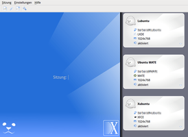
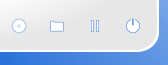
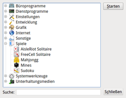

X2Go
Dieser Artikel wurde für die folgenden Ubuntu-Versionen getestet:
Ubuntu 16.04 Xenial Xerus
Ubuntu 14.04 Trusty Tahr
Zum Verständnis dieses Artikels sind folgende Seiten hilfreich:
X2Go  ist eine Software, mit der man einen entfernten Linux-Desktop über eine Netzwerkverbindung nutzen kann, als würde man direkt davor sitzen. Das Verbindungsprotokoll ist für geringe Bandbreiten optimiert, die Verbindung selbst wird automatisch mit SSH verschlüsselt. So ist es ohne weiteres möglich, Verbindungen auch über das Internet aufzubauen. Während der Server nur für Linux zur Verfügung steht, wird die passende Client-Software auch für Windows und Mac OS X angeboten. Im Gegensatz zu VNC erhält jeder Benutzer einen eigenen Linux-Desktop, was den Aufbau eines Terminalservers ermöglicht.
ist eine Software, mit der man einen entfernten Linux-Desktop über eine Netzwerkverbindung nutzen kann, als würde man direkt davor sitzen. Das Verbindungsprotokoll ist für geringe Bandbreiten optimiert, die Verbindung selbst wird automatisch mit SSH verschlüsselt. So ist es ohne weiteres möglich, Verbindungen auch über das Internet aufzubauen. Während der Server nur für Linux zur Verfügung steht, wird die passende Client-Software auch für Windows und Mac OS X angeboten. Im Gegensatz zu VNC erhält jeder Benutzer einen eigenen Linux-Desktop, was den Aufbau eines Terminalservers ermöglicht.
Die Begriffe Server und Client sind in diesem Artikel wie folgt definiert:
Server: der Linux-Rechner, auf den zugegriffen werden soll
Client: der Rechner, mit dem der Server benutzt werden soll
Im Hintergrund werden Technologien verwendet, die für NX (und die freien Varianten FreeNX und Neatx) entwickelt wurden. Inzwischen kann X2Go NX vollständig ersetzen und hat einen Funktionsumfang erreicht, der weit über die hier zu findende Beschreibung hinausgeht. Wer mehr wissen möchte, zieht die englischsprachige Originaldokumentation zu Rate.
Hinweis:
Die Serverkomponente von X2Go funktioniert nur mit Desktop-Umgebungen, die keine 3D-Unterstützung zwingend voraussetzen. Dies schließt derzeit die Verwendung von Unity, der GNOME Shell, Cinnamon und KDE 5 (ab Kubuntu 15.04) auf dem Server aus (Stand: Januar 2016).
Perfekt geeignet sind dagegen Xubuntu, Lubuntu, Ubuntu MATE und KDE (Plasma Workspaces) 4. Mehr Informationen sind im X2Go-Wiki unter Desktop Environment Compatibility zu finden.
Installation¶
 Die Installation richtet sich nach den jeweiligen Erfordernissen. Beabsichtigt man beispielsweise, dass zwei Linux-Rechner "über Kreuz" aufeinander zugreifen können sollen, ist auf beiden Rechner sowohl die Server- als auch die Client-Komponente erforderlich. Wenn man dagegen von wechselnden Rechnern (mit unterschiedlichen Betriebssystemen) auf einen bestimmten Linux-Rechner zugreifen möchte, reicht es aus, auf letzterem nur die Server-Komponente zu installieren. Auf allen anderen Rechnern wird dann ausschließlich der Client installiert.
Die Installation richtet sich nach den jeweiligen Erfordernissen. Beabsichtigt man beispielsweise, dass zwei Linux-Rechner "über Kreuz" aufeinander zugreifen können sollen, ist auf beiden Rechner sowohl die Server- als auch die Client-Komponente erforderlich. Wenn man dagegen von wechselnden Rechnern (mit unterschiedlichen Betriebssystemen) auf einen bestimmten Linux-Rechner zugreifen möchte, reicht es aus, auf letzterem nur die Server-Komponente zu installieren. Auf allen anderen Rechnern wird dann ausschließlich der Client installiert.
Server¶
Die Server-Komponente ist nicht in den offiziellen Paketquellen enthalten. Zur Installation nutzt man das "Personal Packages Archiv" (PPA) [1] der Entwickler.
Adresszeile zum Hinzufügen des PPAs:
ppa:x2go/stable
Hinweis!
Zusätzliche Fremdquellen können das System gefährden.
Ein PPA unterstützt nicht zwangsläufig alle Ubuntu-Versionen. Weitere Informationen sind der  PPA-Beschreibung des Eigentümers/Teams x2go zu entnehmen.
PPA-Beschreibung des Eigentümers/Teams x2go zu entnehmen.
Damit Pakete aus dem PPA genutzt werden können, müssen die Paketquellen neu eingelesen werden.
Nach den Aktualisieren der Paketquellen müssen folgende Pakete installiert werden [2]:
x2goserver (ppa)
x2goserver-xsession (ppa)
 mit apturl
mit apturl
Paketliste zum Kopieren:
sudo apt-get install x2goserver x2goserver-xsession
sudo aptitude install x2goserver x2goserver-xsession
Je nach Desktop-Umgebung des Servers müssen noch weitere Pakete installiert werden (Xfce benötigt kein Extrapaket).
| Auf dem Server vorhandene Desktop-Umgebung und benötigtes Paket | ||
| LXDE | MATE | |
Paketliste zum Kopieren: sudo apt-get install x2golxdebindings
sudo aptitude install x2golxdebindings
|
Paketliste zum Kopieren: sudo apt-get install x2gomatebindings
sudo aptitude install x2gomatebindings
| |
Das folgende Paket ist optional, wird aber für KDE SC 4 empfohlen:
plasma-widget-x2go (ppa)
mit apturl
Paketliste zum Kopieren:
sudo apt-get install plasma-widget-x2go
sudo aptitude install plasma-widget-x2go
Client¶
Im Gegensatz zur Serverkomponente ist der Client in den offiziellen Paketquellen enthalten. Folgendes Paket muss installiert werden [1]:
x2goclient (universe)
mit apturl
Paketliste zum Kopieren:
sudo apt-get install x2goclient
sudo aptitude install x2goclient
PPA¶
Aktuelle Client-Versionen können aus dem gleichen PPA wie die Server-Komponente bezogen werden (siehe oben). Nach dem Aktualisieren der Paketquellen erfolgt die Installation des Clients wie bei der Installation aus den offiziellen Paketquellen beschrieben.
Verwendung¶
|  |
| X2Go-Client |
Während der Server nach der Installation bereits automatisch aktiv ist (für die zukünftigen Benutzer muss ein Benutzerkonto auf dem Server existieren bzw. eingerichtet werden), startet der Client nur auf explizite Anforderung. Bei Ubuntu-Varianten mit einem Anwendungsmenü findet man einen entsprechenden Eintrag unter "Internet -> X2Go Client" [3]. Alternativ verwendet man den Befehl x2goclient.
Bei der ersten Benutzung muss noch eine Verbindung ("Sitzung") eingerichtet werden. Während Rechner- (oder IP-Adresse) und Benutzername sowie die Sitzungsart (Desktop-Umgebung oder Fenstermanager auf dem Server) zwingend erforderlich sind, sind weitere Angaben zur Verbindung optional. Empfehlenswert ist dennoch, z.B. die Bildschirmauflösung, die Audioausgabe und ähnliches zu kontrollieren und bei Bedarf den eigenen Wünschen anzupassen.
Der X2Go-Client kann mehrere Verbindungen verwalten. Nach Auswahl der gewünschten bestätigt man noch das Benutzerkennwort (und den SSH-Schlüssel des Servers) und erhält ein separates Fenster, innerhalb dessen man bereits auf dem entfernten Linux-Desktop angemeldet ist und sofort loslegen kann. Zum Beenden einer Sitzung meldet man sich auf dem Server wie gewohnt ab und schließt dann den X2Go-Client.
|  |
| Sitzungsmanagement: (von links nach rechts) 1. Entf. Anwendungen 2. Freigaben 3. Pause 4. Beenden |
Sitzungen anhalten und wieder aufnehmen¶
Eine Sitzung kann durch einfaches Beenden des X2Go-Clients und späteres Neuverbinden auf dem Server weiterlaufen. Dies ist sehr praktisch, wenn die Netzwerkverbindung unerwartet abbricht. Im Normalfall sollte man die Sitzung jedoch über die entsprechende Schaltfläche unterhalb der aktiven Sitzung im X2Go-Client anhalten, wenn man diese später fortsetzen möchte.
Drucken¶
Egal, wie bequem das Arbeiten mit einem entfernten Desktop ist: Spätestens beim Ausdruck eines Dokuments oder Bilds stellt man schnell fest, das nur die am Server angeschlossenen Drucker zur Verfügung stehen. X2Go bietet daher die Möglichkeit, lokal vorhandene Drucker als Ausgabegeräte des Servers einzubinden.
Auf dem Server werden der Druckdienst CUPS und folgende Pakete benötigt:
x2goserver-printing (ppa)
cups-x2go (ppa)
mit apturl
Paketliste zum Kopieren:
sudo apt-get install x2goserver-printing cups-x2go
sudo aptitude install x2goserver-printing cups-x2go
Nun muss der oder die Benutzer, die eigene Drucker einbinden möchten, auf dem Server zur entsprechenden Gruppe hinzugefügt werden. Die Mitgliedschaft in der Gruppe fuse basiert auf dem Hintergrund, dass X2Go Zugriff auf den Client benötigt, um die Druckdatei auf den Client zu transportieren:
sudo adduser BENUTZERNAME x2goprint sudo adduser BENUTZERNAME fuse
Die Einrichtung des Druckers erfolgt auf dem Server über CUPS bzw. die jeweils vorhandenen Verwaltungswerkzeuge der unterschiedlichen Desktop-Umgebungen. Dies kann innerhalb einer bereits bestehenden Sitzung erfolgen, wenn man Root-Rechte auf dem Server besitzt.
Hinzufügen eines neuen Druckers
Ein neuer "Virtual X2Go Printer" wird automatisch erkannt
Druckertreiber auswählen:
Hersteller:
genericModell:
Generic CUPS-X2Go Printer
Weitere Angaben wie Druckername und Standort werden wie gewohnt festgelegt. Diese Einstellungen werden in der Datei /etc/cups/cups-x2go.conf auf dem Server gespeichert.
Anschließend können am Client angeschlossene Drucker auch mit auf dem Server ausgeführten Anwendungen genutzt werden. Als Zwischenschritt vor dem Drucken öffnet sich ein Fenster, mit dem man entweder noch Druckoptionen aktivieren oder zwischen verschiedenen Druckern auf dem Client (falls vorhanden) auswählen kann. Ohne weitere Angaben wird der Standarddrucker des Clients verwendet.
Mehr Informationen sind der offiziellen Dokumentation zu entnehmen: X2Go Client-Side Printing .
Freigaben¶
Um lokal vorhandenen Daten auch mit den auf dem Server ausgeführten Programmen nutzen zu können, bearbeitet man im X2Go-Client eine vorhandene Sitzung über die Sitzungsverwaltung ( Strg + E ) und fügt über die Registerkarte "freigegebene Ordner" einen oder mehrere lokale Ordner hinzu. Bei Bedarf kann die Option "automatisch verbinden" aktiviert werden.
Innerhalb einer Sitzung findet man diese Freigaben auf dem Server unterhalb von ~/media/ im Homeverzeichnis wieder. Während die Unterordner ~/media/cd/ und ~/media/rm/ für ein optisches Laufwerk respektive externe Datenträger (removable media?) stehen, dient der Unterordner ~/media/disk/ als Sammelstelle für die erteilten Freigaben. So entspricht beispielsweise der Ordner /home/BENUTZERNAME/media/disk/_home_BENUTZERNAME/ auf dem Server dem Ordner /home/BENUTZERNAME/ auf dem Client.
Um während einer laufenden Sitzung weitere Freigaben einzurichten, wechselt man zum X2Go-Client. Unterhalb der aktiven Sitzung wählt man das Ordnersymbol, dass direkt zu "Sitzungsverwaltung -> freigegebene Ordner" führt. Auf diesem Weg können auch externe, via USB angeschlossene Datenträger nachträglich eingebunden werden. Unter Ubuntu sind diese (auf dem Client) in der Regel unter /media/BENUTZERNAME/ zu finden.
Entfernte Anwendungen¶
|  |
| Veröffentlichte Anwendungen - Auswahlmenü |
Obwohl X2Go entwickelt wurde, um einen kompletten Desktop darzustellen, können auf Wunsch auch einzelne Anwendungen gestartet werden. Deren Programmfenster integrieren sich dann nahtlos (seamless) in die eigene Desktop-Umgebung. Im Client stehen bei der Sitzungsart dazu zwei Mechanismen zur Verfügung:
"Anwendung"
"Veröffentlichte Anwendungen"
Im ersten Fall wählt man entweder zwischen vordefinierten Profilen ("Webbrowser", "Terminal" etc.) oder übergibt den Pfad zum gewünschten Programm, z.B. /usr/bin/PROGRAMMNAME. Die "Veröffentlichten Anwendungen" verhalten sich komplett anders: hier muss man nach dem Verbindungsaufbau über ein Menü zuerst die jeweilige Anwendung auswählen und über die Schaltfläche "Starten" öffnen. Dieses Auswahlmenü erhält man über ein kleines Kreissymbol unterhalb der aktiven Sitzung (siehe Sitzungsmanagement).
Hinweis:
Entfernte Anwendungen können leicht mit lokalen verwechselt werden. Daher enthält die Titelzeile eines Programmfensters zur einfacheren Identifikation hinter dem Anwendungsnamen den Zusatz "(on SERVERNAME)".
Veröffentlichte Anwendungen sind nichts anderes als der Inhalt des Ordners /etc/x2go/applications/ auf dem Server. Sollte eine Anwendung fehlen, kopiert man den entsprechenden Programmstarter in diesen Ordner:
sudo cp /PFAD/ZU/PROGRAMM.desktop /etc/x2go/applications/
Desktop Sharing¶
Mit X2Go kann auch das Standardverhalten von Programmen wie TeamViewer nachgebildet werden: ein Hilfesuchender gibt den eigenen Desktop frei und lädt einen Helfer ein. Diese Funktion wird auch als "Desktop Sharing" oder "Remote Assistance" bezeichnet (siehe auch Using the X2Go Desktop Sharing Feature ). Die Kommunikation läuft über den Standardport 22, der nicht durch eine Firewall blockiert sein darf.
Auf dem Server wird folgendes Paket benötigt:
x2godesktopsharing (ppa)
mit apturl
Paketliste zum Kopieren:
sudo apt-get install x2godesktopsharing
sudo aptitude install x2godesktopsharing
Nun muss der oder die Benutzer, die den Zugriff auf den eigenen Desktop erlauben möchten, auf dem Server der entsprechenden Gruppe hinzugefügt werden:
sudo adduser BENUTZERNAME x2godesktopsharing
Der Start auf dem Server erfolgt dann bei Ubuntu-Varianten mit einem Anwendungsmenü über "Internet -> X2Go Desktop Sharing". Mittels eines kleinen Symbols im Panel lässt sich das Desktop Sharing innerhalb einer grafischen X11-Sitzung auf dem Server mit der Maus aktivieren, deaktivieren oder beenden. Um diese Funktionalität auch ohne Maus bzw. Benutzeraktion benutzen zu können, kann man eine Option hinter den Befehl schreiben. Beispiel:
x2godesktopsharing --activate-desktop-sharing
Auf dem Client richtet man eine neue Sitzung vom Typ "Zugriff auf lokalen Desktop" ein. Da Rechnernamen bei einer entfernten Verbindung u.U. nicht benutzt werden können, verwendet man dann einfach die IP-Adresse. Nach der Eingabe des eigenen Passworts auf dem Server erhält man ein Auswahlfenster mit dem freigegebenen Desktop des Hilfesuchenden, zu dem man sich auf zwei Arten verbinden kann: "Nur Betrachten" oder "Vollzugriff". Insbesondere bei letzterem Punkt muss unbedingt beachtet werden, dass man sich am Ende nicht wie gewohnt abmeldet, sondern einfach das geöffnete Fenster schließt. Andernfalls meldet man den Hilfesuchenden ab (der so zumindest die Gewissheit hat, dass die Fernwartung beendet ist).
Je nach Desktop-Umgebung können beim Desktop Sharing verschiedene Probleme auftreten (siehe Links am Ende des Artikels).
Verbindung zum eigenen Desktop auf dem Server¶
X2Go kann auch die Verbindung zu einem bereits geöffneten Desktop herstellen. Die Vorgehensweise ist wie beim Desktop Sharing, nur dass bei identischem Benutzer die SSH-Authentifizierung ohne zusätzliche Genehmigung durchgereicht wird. Die Sitzung muss bereits aktiv und damit am Bildschirm des Servers zu sehen sein. Im Unterschied zu nativen X2Go-Sessions kann die Auflösung aber nicht automatisch angepasst werden. Idealerweise sind also die Auflösungen von Server und Client aufeinander abgestimmt. Die Fenstergröße muss per Hand angepasst werden.
Tastenkürzel¶
Einige praktische Tastenkürzel für den x2goclient-Client:
| Tastenkürzel | |
| Taste | Beschreibung |
| Strg + Alt + F , F11 | Wechsel zwischen Fenster- und Vollbildmodus |
| Strg + Alt + M | Minimieren des Client-Fensters |
Strg +
Alt +  | Bewegen des Bildausschnitts, wenn X2Go-Fenster größer als der eigene Bildschirm ist |
| Strg + Alt + T | Verbindung beenden |
Siehe auch Customize NX Keyboard Shortcuts .
Alternative Clients¶
Neben dem X2Go-Client stehen weitere Clients zur Verfügung.

PyHoca-GUI¶
PyHoca-GUI ist ein mit Python erstellter Client, der sich als Symbol im Panel verankert und ähnlich wie das Symbol des Netzwerkmanagers bedient wird. Ein Linksklick  zeigt die zur Verfügung stehenden X2Go-Verbindungen an, während ein Rechtsklick
zeigt die zur Verfügung stehenden X2Go-Verbindungen an, während ein Rechtsklick  zur Konfiguration dienen soll. Letzteres Verhalten war zum Zeitpunkt der Erstellung dieses Artikels aber noch nicht implementiert.
zur Konfiguration dienen soll. Letzteres Verhalten war zum Zeitpunkt der Erstellung dieses Artikels aber noch nicht implementiert.
Folgendes Paket wird benötigt:
pyhoca-gui (universe, ab Ubuntu 14.04)
pyhoca-cli (universe, optional, Kommandozeilenversion)
mit apturl
Paketliste zum Kopieren:
sudo apt-get install pyhoca-gui pyhoca-cli
sudo aptitude install pyhoca-gui pyhoca-cli
Nach der Installation findet man einen Menü-Eintrag unter "Internet -> PyHoca-GUI", über den das Programm gestartet werden kann.
Browser-Plugin¶
Das X2Go Browser-Plugin für Firefox, Chromium/Google Chrome und Epiphany ist ein Client für Linux, mit dem ein X2Go-Server im Browserfenster als Webseite genutzt werden kann. Die Sitzung läuft direkt im Browser, kann aber auch abgekoppelt oder in den Vollbildmodus geschaltet werden.
Serverseitig setzt dies einen installierten und funktionsfähigen Apache-Webserver voraus:
apache2
x2goplugin-provider (universe)
mit apturl
Paketliste zum Kopieren:
sudo apt-get install apache2 x2goplugin-provider
sudo aptitude install apache2 x2goplugin-provider
Auf der Client-Seite ist ein anderes Paket erforderlich:
x2goplugin (universe)
mit apturl
Paketliste zum Kopieren:
sudo apt-get install x2goplugin
sudo aptitude install x2goplugin
Nach einem Neustart des Browsers kann die X2Go-Loginseite über http://SERVERNAME_ODER_IP-ADRESSE/x2goplugin.html aufgerufen werden. Weitere Einstellungen nimmt man über die Datei /usr/share/x2go/plugin/x2goplugin.html auf dem Server vor.
Konfiguration¶
Während die Konfiguration der Client-Programme i.d.R. grafisch erfolgen kann, fehlt diese Möglichkeit beim Server. Einstellungen werden stattdessen mit einem Editor und Root-Rechten über Dateien im Ordner /etc/x2go/ vorgenommen.
Problembehebung¶
Eigene Sitzung definieren¶
Manchmal kann es erforderlich sein, die Sitzungsart oder genauer den Befehl zum Aufruf einer Desktop-Umgebung selbst zu definieren. Bei der Auswahl der Sitzungsart wählt man "Andere Desktopumgebung" und verwendet einen angepassten Befehl. Hier ein Beispiel für Lubuntu (1241958):
lxsession -e LXDE -s Lubuntu
Das Gleiche gilt auch, wenn man statt einer Desktop-Umgebung nur einen reinen Fenstermanager auf dem Server einsetzt. Über diesen Mechanismus angepasst werden müssen beispielsweise Openbox und IceWM (Details ).
Fehlende Audioausgabe bei Lubuntu¶
Um die Audioausgabe auf dem Client zu realisieren, wird von X2Go PulseAudio verwendet. Dieses in Lubuntu nicht enthalten und muss dort erst in Form des Pakets pavucontrol nachgerüstet werden (fehlende Abhängigkeiten werden automatisch installiert).
Inkompatibilität mit NX¶
Obwohl X2Go auf einer Weiterentwicklung der NX-Bibliotheken beruht, ist es inkompatibel zu NX. Praktisch heißt das, der X2Go-Client unterstützt neben dem hauseigenen Protokoll zwar auch RDP und XDMCP, aber keinen NX-Server. Das gilt auch umgekehrt: ein NX-Client kann sich nicht mit einem X2Go-Server verbinden.
Links¶
Projektseite
mit ausführlicher DokumentationFAQ
- häufige Fragen und Antworten
Vorschau auf das neue X2go 4
 - Linuxmagazin, 02/2013
- Linuxmagazin, 02/2013Xubuntu - SSH/x2go
- Problemlösung für Desktop Sharing unter XubuntuGuacamole
- Remote-Desktop-Lösung, die auf dem Client nur einen HTML5-fähigen Webbrowser benötigtLTSP
 Terminalserver für Kabelnetzwerke, der auch mit X2Go (für mobile Verbindungen) kombiniert werden kann
Terminalserver für Kabelnetzwerke, der auch mit X2Go (für mobile Verbindungen) kombiniert werden kann
- Erstellt mit Inyoka
-
 2004 – 2017 ubuntuusers.de • Einige Rechte vorbehalten
2004 – 2017 ubuntuusers.de • Einige Rechte vorbehalten
Lizenz • Kontakt • Datenschutz • Impressum • Serverstatus -
Serverhousing gespendet von